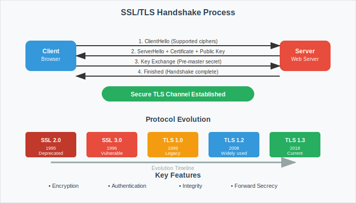

SSL
Secure Sockets Layer - Foundation of Web Security
Understanding the Protocol That Secures the Internet

SSL Definition
SSL (Secure Sockets Layer) is a cryptographic protocol designed to provide secure communication over a computer network, establishing encrypted links between networked computers.
Key Characteristics:
- Layer: Between Transport and Application layers
- Purpose: Authenticate and encrypt network connections
- Legacy: Predecessor to TLS (Transport Layer Security)
- Standard: Industry standard for secure communications
- Implementation: Used in HTTPS, email, VPNs, and more
Modern Note: While SSL is widely referenced, TLS has replaced SSL in actual implementations since the late 1990s
SSL History and Evolution
SSL Version Timeline:
SSL 1.0 (1994): Never publicly released due to security flaws
SSL 2.0 (1995): First public release by Netscape
• Major security vulnerabilities discovered
• Deprecated in 2011
SSL 3.0 (1996): Complete redesign to fix 2.0 problems
• Widely adopted but later found vulnerable
• POODLE attack discovered in 2014
• Deprecated in 2015
TLS Evolution:
TLS 1.0 (1999) → TLS 1.1 (2006) → TLS 1.2 (2008) → TLS 1.3 (2018)
How SSL Works
SSL Operation: Creates a secure "tunnel" between client and server using a combination of asymmetric and symmetric cryptography.
SSL Process Overview:
1. Handshake Phase:
• Client and server exchange capabilities
• Server presents digital certificate
• Negotiate encryption algorithms
• Exchange cryptographic keys
2. Secure Communication:
• Data encrypted with symmetric keys
• Integrity protection with MAC
• Both parties can decrypt messages
3. Session Termination:
• Clean closure with alert messages
• Session keys discarded
SSL Handshake Process (Detailed)
Step-by-Step SSL Handshake:
Step 1 - Client Hello:
Client → Server: SSL version, cipher suites, random number
Step 2 - Server Hello:
Server → Client: Chosen SSL version, cipher suite, random number
Step 3 - Certificate:
Server → Client: Server's digital certificate (with public key)
Step 4 - Key Exchange:
Client: Verifies certificate, generates pre-master secret
Client → Server: Pre-master secret (encrypted with server's public key)
Step 5 - Session Keys:
Both: Generate symmetric session keys from shared secrets
Step 6 - Handshake Complete:
Both: Exchange "Finished" messages encrypted with session keys
SSL Certificate Structure
SSL Certificate: Digital document that binds a cryptographic key to an organization's details, verified by a Certificate Authority.
Certificate Contains:
- Subject: Domain name and organization information
- Issuer: Certificate Authority that signed the certificate
- Public Key: Server's public cryptographic key
- Validity Period: Start date and expiration date
- Serial Number: Unique identifier from the CA
- Signature Algorithm: Algorithm used to sign certificate
- Digital Signature: CA's cryptographic signature
- Extensions: Additional certificate properties
SSL vs TLS Comparison
SSL (Legacy):
- SSL 2.0/3.0 deprecated
- Known security vulnerabilities
- Weaker cipher suites
- Less secure handshake
- Vulnerable to various attacks
- No longer recommended
TLS (Modern):
- TLS 1.2/1.3 current standards
- Enhanced security mechanisms
- Stronger encryption algorithms
- Improved handshake process
- Better performance
- Industry standard
Important: When people say "SSL" today, they typically mean TLS. Modern implementations use TLS protocols.
SSL/TLS Cryptographic Components
Symmetric Encryption:
- AES (Advanced Encryption Standard)
- ChaCha20 (modern stream cipher)
- 3DES (legacy, deprecated)
- Used for bulk data encryption
- Fast and efficient
Asymmetric Encryption:
- RSA (widely supported)
- ECDSA (Elliptic Curve)
- DH/ECDH (key exchange)
- Used for authentication
- Key establishment
Hash Functions:
- SHA-256, SHA-384
- HMAC (keyed hashing)
- MD5 (deprecated)
- Message integrity
- Digital signatures
SSL/TLS Cipher Suites
Cipher Suite: Combination of cryptographic algorithms used for key exchange, authentication, encryption, and message authentication.
Cipher Suite Format:
TLS_ECDHE_RSA_WITH_AES_128_GCM_SHA256
Breaking it down:
• TLS: Protocol version
• ECDHE: Key exchange algorithm (Elliptic Curve Diffie-Hellman Ephemeral)
• RSA: Authentication algorithm
• AES_128_GCM: Symmetric encryption (AES 128-bit with GCM mode)
• SHA256: Message authentication hash function
Negotiation: Client proposes list, server selects strongest supported suite
Historical SSL/TLS Vulnerabilities
| Vulnerability |
Year |
Affected |
Impact |
| POODLE |
2014 |
SSL 3.0 |
Padding oracle attack |
| Heartbleed |
2014 |
OpenSSL |
Memory disclosure |
| BEAST |
2011 |
TLS 1.0 |
CBC attack |
| CRIME |
2012 |
TLS compression |
Compression attack |
| BREACH |
2013 |
HTTP compression |
Data extraction |
| FREAK |
2015 |
Export ciphers |
Weak encryption forced |
Lesson: Regular updates and proper configuration are essential for SSL/TLS security
SSL/TLS Security Best Practices
- Use Modern TLS Versions: TLS 1.2 minimum, prefer TLS 1.3
- Disable Legacy Protocols: No SSL 2.0/3.0, TLS 1.0/1.1
- Strong Cipher Suites: Use AEAD ciphers, forward secrecy
- Proper Key Management: 2048-bit RSA minimum, consider ECC
- Certificate Security: Use reputable CAs, monitor expiration
- Regular Updates: Keep SSL/TLS libraries current
- Configuration Testing: Use SSL Labs, testssl.sh
- HSTS Implementation: Force HTTPS connections
Performance Optimization
Performance Costs:
- Handshake latency (1-2 RTT)
- CPU overhead for encryption
- Memory usage for connections
- Certificate validation time
- Key generation costs
Optimization Techniques:
- Session resumption/tickets
- Hardware acceleration
- Connection keepalive
- OCSP stapling
- Shorter certificate chains
Modern Reality: TLS 1.3 reduces handshake to 1-RTT, significantly improving performance
SSL/TLS Implementation Checklist
Server Configuration:
1. Certificate Setup:
☐ Obtain certificate from trusted CA
☐ Install certificate and private key
☐ Configure certificate chain
☐ Set up certificate renewal
2. Protocol Configuration:
☐ Enable TLS 1.2 and 1.3 only
☐ Disable SSL 2.0, 3.0, TLS 1.0, 1.1
☐ Configure strong cipher suites
☐ Enable forward secrecy
3. Security Headers:
☐ Implement HSTS header
☐ Configure OCSP stapling
☐ Set security headers
4. Testing and Monitoring:
☐ Test with SSL Labs
☐ Monitor certificate expiration
☐ Regular security assessments
Common SSL/TLS Errors
- Certificate Expired: Certificate past validity date
- Self-Signed Certificate: Certificate not from trusted CA
- Hostname Mismatch: Certificate doesn't match domain name
- Untrusted Certificate Authority: CA not in trusted store
- Mixed Content: HTTP resources on HTTPS page
- Protocol Mismatch: Client/server protocol incompatibility
- Cipher Suite Mismatch: No common encryption algorithms
- Certificate Chain Issues: Missing intermediate certificates
Troubleshooting: Use tools like openssl, curl, browser developer tools to diagnose issues
SSL/TLS Testing and Analysis Tools
Online Tools:
- SSL Labs: Comprehensive SSL test
- SSL Checker: Certificate validation
- SSL Shopper: Certificate installation checker
- DigiCert Tool: SSL installation tester
Command-Line Tools:
- OpenSSL: Swiss army knife for SSL/TLS
- testssl.sh: Comprehensive SSL tester
- nmap: SSL cipher and protocol scanning
- sslyze: Python SSL analyzer
OpenSSL Examples:
# Test SSL connection
openssl s_client -connect example.com:443
# Check certificate details
openssl x509 -in certificate.crt -text -noout
# Test specific TLS version
openssl s_client -connect example.com:443 -tls1_2
Future of SSL/TLS
- TLS 1.3 Adoption: Widespread deployment of latest version
- Post-Quantum Cryptography: Quantum-resistant algorithms
- Certificate Transparency: Public certificate logs
- Automated Certificate Management: ACME protocol expansion
- Zero-RTT Resumption: Faster connection establishment
- DNS-over-HTTPS: Secure DNS with TLS
- ESNI/ECH: Encrypted Server Name Indication
- HTTP/3 Integration: TLS over QUIC protocol
Key Takeaways
- SSL is the foundation protocol for secure internet communications
- Modern implementations use TLS, not the original SSL protocols
- SSL/TLS provides authentication, encryption, and data integrity
- Proper configuration is crucial for security and performance
- Regular updates and monitoring are essential
- Certificate management is a critical operational aspect
- Understanding SSL/TLS is vital for web security
Remember: SSL/TLS security depends not just on the protocol, but on proper implementation, configuration, and maintenance
Thank You
Questions & Discussion
Next: Cyber Laws and Legal Framework